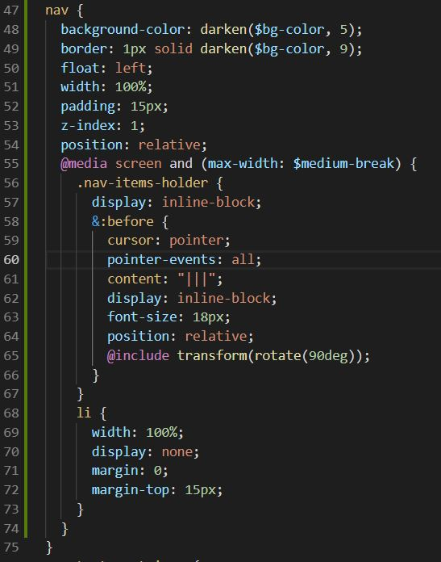

Hello Sass,
"Sass (short for syntactically awesome style sheets) is a style sheet language initially designed by Hampton Catlin and developed by Natalie Weizenbaum. After its initial versions, Weizenbaum and Chris Eppstein have continued to extend Sass with SassScript, a simple scripting language used in Sass files."

"The indented syntax is a metalanguage. SCSS is a nested metalanguage, as valid CSS is valid SCSS with the same semantics." - Wikipedia